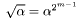

Classes | |
| class | Curve |
| Base "class" (really class template) for Edwards Curves. More... | |
| class | Affine |
| Class skeleton for affine points on Edwards Curves. More... | |
| class | Projective |
| Class skeleton for projective points on Edwards Curves. More... | |
| class | InvalidParametersException |
| Custom exception to be thrown when building a curve with invalid parameters. More... | |
| class | NotImplementedException |
| Custom exception to be thrown when we reach the limits of current implementation. More... | |
| class | DifferentCurvesException |
| Custom exception to be thrown when attempting to operate on points from different curves. More... | |
Enumerations | |
| enum | CurveID { Odd, Binary, Twisted } |
| quick typesafe identifiers for curves More... | |
Functions | |
| std::string | getName (const OddCurve &) |
| output of name | |
| bool | parametersValid (const OddCurve &curve) |
| Parameter validation. | |
| bool | curveEquation (const OddCurve &curve, const NTL::ZZ_pE &x, const NTL::ZZ_pE &y) |
| Validation of point coordinates. | |
| std::string | getName (const BinaryCurve &) |
| output of name | |
| bool | parametersValid (const BinaryCurve &curve) |
| Parameter validation. | |
| bool | curveEquation (const BinaryCurve &curve, const NTL::GF2E &x, const NTL::GF2E &y) |
| Validation of point coordinates. | |
| std::string | getName (const TwistedCurve &) |
| output of name | |
| bool | parametersValid (const TwistedCurve &curve) |
| Parameter validation. | |
| bool | curveEquation (const TwistedCurve &curve, const NTL::ZZ_pE &x, const NTL::ZZ_pE &y) |
| Validation of point coordinates. | |
| const NTL::GF2E | gf2m_sqrt (const NTL::GF2E &alpha, const long &m) |
| Per MOL paper, . | |
| const NTL::GF2E | half_trace (const NTL::GF2E &alpha, const long m) |
| Half-Trace function. | |
| const NTL::GF2E | mol_alg_1 (const long &n, const NTL::GF2E &a2, const NTL::GF2E &a6) |
| MOL's Algorithm 1 to compute d1. | |
| BinaryCurve | from_weierstrass (const long n, const NTL::ZZ &m, const NTL::GF2E &a2, const NTL::GF2E &a6) |
| void | mol_bm_aff (NTL::GF2E &x, NTL::GF2E &y, const NTL::GF2E &u, const NTL::GF2E &v, const long m, const NTL::GF2E &d1, const NTL::GF2E &d2, const NTL::GF2E &a2) |
| MOL's birational map from Weierstrass curve to Affine Binary Edwards. | |
| void | mol_bm_proj (NTL::GF2E &x, NTL::GF2E &y, NTL::GF2E &z, const NTL::GF2E &u, const NTL::GF2E &v, const long m, const NTL::GF2E &d1, const NTL::GF2E &d2, const NTL::GF2E &a2) |
| NTL::ZZ | counterBTTiming (const NTL::ZZ &k, const NTL::ZZ &m) |
| This function counteracts the timing attack outlined in Brumley & Tuveri's paper. | |
| OddAff | aff_id (const OddCurve &curve) |
| Affine neutral element on odd curve. | |
| OddAff | aff_add (const OddAff &a1, const OddAff &a2) |
| Affine addition for points on an odd curve. | |
| OddAff | aff_neg (const OddAff &a) |
| Negation of an affine point on an odd curve. | |
| OddAff | aff_double (const OddAff &a) |
| Affine point doubling on odd curve. | |
| BinaryAff | aff_id (const BinaryCurve &curve) |
| Affine neutral element on binary curve. | |
| BinaryAff | aff_add (const BinaryAff &a1, const BinaryAff &a2) |
| Affine addition for points on a binary curve. | |
| BinaryAff | aff_neg (const BinaryAff &a) |
| Negation of an affine point on a binary curve. | |
| BinaryAff | aff_double (const BinaryAff &a) |
| Affine point doubling on binary curve. | |
| BinaryAff | birMapAff (const NTL::GF2E &u, const NTL::GF2E &v, const NTL::GF2E &a2, const BinaryCurve &curve) |
| Birational Map from Weierstrass curve to Binary Edwards curve. | |
| TwistedAff | aff_id (const TwistedCurve &curve) |
| Affine neutral element on twisted curve. | |
| TwistedAff | aff_add (const TwistedAff &a1, const TwistedAff &a2) |
| Affine addition for points on a twisted curve. | |
| TwistedAff | aff_neg (const TwistedAff &a) |
| Negation of an affine point on a twisted curve. | |
| TwistedAff | aff_double (const TwistedAff &a) |
| Affine point doubling on a twisted curve. | |
| OddProj | proj_id (const OddCurve &curve) |
| Projective neutral element on odd curve. | |
| OddProj | proj_add (const OddProj &p1, const OddProj &p2) |
| Projective addition for points on an odd curve. | |
| OddProj | proj_neg (const OddProj &p) |
| Negation of an projective point on an odd curve. | |
| OddProj | proj_double (const OddProj &p) |
| Projective point doubling on odd curve. | |
| BinaryProj | proj_id (const BinaryCurve &curve) |
| Projective neutral element on binary curve. | |
| BinaryProj | proj_add (const BinaryProj &p1, const BinaryProj &p2) |
| Projective addition for points on a binary curve. | |
| BinaryProj | proj_neg (const BinaryProj &p) |
| Negation of an projective point on a binary curve. | |
| BinaryProj | proj_double (const BinaryProj &p) |
| Projective point doubling on binary curve. | |
| BinaryProj | birMapProj (const NTL::GF2E &u, const NTL::GF2E &v, const NTL::GF2E &a2, const BinaryCurve &curve) |
| Birational Map from Weierstrass curve to Binary Edwards curve. | |
| TwistedProj | proj_id (const TwistedCurve &curve) |
| Projective neutral element on twisted curve. | |
| TwistedProj | proj_add (const TwistedProj &p1, const TwistedProj &p2) |
| Projective addition for points on a twisted curve. | |
| TwistedProj | proj_neg (const TwistedProj &p) |
| Negation of an projective point on a twisted curve. | |
| TwistedProj | proj_double (const TwistedProj &p) |
| Projective point doubling on twisted curve. | |
| template<class T > | |
| void | set_parameter (T ¶m, const std::string &value, const bool &hex_and_rev=false) |
| Generic hackery to set a parameter to a string. | |
| enum e2c2::CurveID |
quick typesafe identifiers for curves
CurveID Used in curve definitions, made an enum class for typesafety and speed; used to differentiate curves that are defined similarly
| TwistedAff e2c2::aff_add | ( | const TwistedAff & | a1, | |
| const TwistedAff & | a2 | |||
| ) | [inline] |
Affine addition for points on a twisted curve.
| BinaryAff e2c2::aff_add | ( | const BinaryAff & | a1, | |
| const BinaryAff & | a2 | |||
| ) | [inline] |
Affine addition for points on a binary curve.
| OddAff e2c2::aff_add | ( | const OddAff & | a1, | |
| const OddAff & | a2 | |||
| ) | [inline] |
Affine addition for points on an odd curve.
| TwistedAff e2c2::aff_double | ( | const TwistedAff & | a | ) | [inline] |
Affine point doubling on a twisted curve.
| BinaryAff e2c2::aff_double | ( | const BinaryAff & | a | ) | [inline] |
Affine point doubling on binary curve.
| OddAff e2c2::aff_double | ( | const OddAff & | a | ) | [inline] |
Affine point doubling on odd curve.
| TwistedAff e2c2::aff_id | ( | const TwistedCurve & | curve | ) | [inline] |
Affine neutral element on twisted curve.
| BinaryAff e2c2::aff_id | ( | const BinaryCurve & | curve | ) | [inline] |
Affine neutral element on binary curve.
| OddAff e2c2::aff_id | ( | const OddCurve & | curve | ) | [inline] |
Affine neutral element on odd curve.
| TwistedAff e2c2::aff_neg | ( | const TwistedAff & | a | ) | [inline] |
Negation of an affine point on a twisted curve.
| BinaryAff e2c2::aff_neg | ( | const BinaryAff & | a | ) | [inline] |
Negation of an affine point on a binary curve.
| OddAff e2c2::aff_neg | ( | const OddAff & | a | ) | [inline] |
Negation of an affine point on an odd curve.
| BinaryAff e2c2::birMapAff | ( | const NTL::GF2E & | u, | |
| const NTL::GF2E & | v, | |||
| const NTL::GF2E & | a2, | |||
| const BinaryCurve & | curve | |||
| ) | [inline] |
Birational Map from Weierstrass curve to Binary Edwards curve.
birMapAff(const NTL::GF2E& u, const NTL::GF2E& v, const BinaryCurve& curve)
| BinaryProj e2c2::birMapProj | ( | const NTL::GF2E & | u, | |
| const NTL::GF2E & | v, | |||
| const NTL::GF2E & | a2, | |||
| const BinaryCurve & | curve | |||
| ) | [inline] |
Birational Map from Weierstrass curve to Binary Edwards curve.
birMapProj(const NTL::GF2E& u, const NTL::GF2E& v, const BinaryCurve& curve)
| NTL::ZZ e2c2::counterBTTiming | ( | const NTL::ZZ & | k, | |
| const NTL::ZZ & | m | |||
| ) | [inline] |
This function counteracts the timing attack outlined in Brumley & Tuveri's paper.
| bool e2c2::curveEquation | ( | const TwistedCurve & | curve, | |
| const NTL::ZZ_pE & | x, | |||
| const NTL::ZZ_pE & | y | |||
| ) | [inline] |
Validation of point coordinates.
curveEquation(const TwistedCurve& curve, const NTL::ZZ_pE& x, const NTL::ZZ_pE& y)
| bool e2c2::curveEquation | ( | const BinaryCurve & | curve, | |
| const NTL::GF2E & | x, | |||
| const NTL::GF2E & | y | |||
| ) | [inline] |
Validation of point coordinates.
curveEquation(const BinaryCurve& curve, const NTL::GF2E& x, const NTL::GF2E& y)
| bool e2c2::curveEquation | ( | const OddCurve & | curve, | |
| const NTL::ZZ_pE & | x, | |||
| const NTL::ZZ_pE & | y | |||
| ) | [inline] |
Validation of point coordinates.
curveEquation(const OddCurve& curve, const NTL::ZZ_pE& x, const NTL::ZZ_pE& y)
| BinaryCurve e2c2::from_weierstrass | ( | const long | n, | |
| const NTL::ZZ & | m, | |||
| const NTL::GF2E & | a2, | |||
| const NTL::GF2E & | a6 | |||
| ) | [inline] |
Construct a Binary Edwards Curve from Weierstrass Parameters, degree of field extension, and supplied cardinality of curve
| std::string e2c2::getName | ( | const TwistedCurve & | ) | [inline] |
output of name
| std::string e2c2::getName | ( | const BinaryCurve & | ) | [inline] |
output of name
| std::string e2c2::getName | ( | const OddCurve & | ) | [inline] |
output of name
| void e2c2::mol_bm_proj | ( | NTL::GF2E & | x, | |
| NTL::GF2E & | y, | |||
| NTL::GF2E & | z, | |||
| const NTL::GF2E & | u, | |||
| const NTL::GF2E & | v, | |||
| const long | m, | |||
| const NTL::GF2E & | d1, | |||
| const NTL::GF2E & | d2, | |||
| const NTL::GF2E & | a2 | |||
| ) | [inline] |
MOL's birational map from Weierstrass curve to Projective Binary Edwards
| bool e2c2::parametersValid | ( | const TwistedCurve & | curve | ) | [inline] |
Parameter validation.
| bool e2c2::parametersValid | ( | const BinaryCurve & | curve | ) | [inline] |
Parameter validation.
| bool e2c2::parametersValid | ( | const OddCurve & | curve | ) | [inline] |
Parameter validation.
| TwistedProj e2c2::proj_add | ( | const TwistedProj & | p1, | |
| const TwistedProj & | p2 | |||
| ) | [inline] |
Projective addition for points on a twisted curve.
proj_add(const TwistedProj& p1, const TwistedProj& p2)
From Bernstein, Birkner, Joye, Lange, Peters, "Twisted Edwards Curves"
| BinaryProj e2c2::proj_add | ( | const BinaryProj & | p1, | |
| const BinaryProj & | p2 | |||
| ) | [inline] |
Projective addition for points on a binary curve.
proj_add(const BinaryProj& p1, const BinaryProj& p2)
from Bernstein, Lange, and Farashahi, "Binary Edwards Curves"
| OddProj e2c2::proj_add | ( | const OddProj & | p1, | |
| const OddProj & | p2 | |||
| ) | [inline] |
Projective addition for points on an odd curve.
| TwistedProj e2c2::proj_double | ( | const TwistedProj & | p | ) | [inline] |
Projective point doubling on twisted curve.
proj_double(const TwistedProj& p)
From Bernstein, Birkner, Joye, Lange, Peters, "Twisted Edwards Curves"
| BinaryProj e2c2::proj_double | ( | const BinaryProj & | p | ) | [inline] |
Projective point doubling on binary curve.
proj_double(const BinaryProj& p)
from Bernstein, Lange, and Farashahi, "Binary Edwards Curves"
| OddProj e2c2::proj_double | ( | const OddProj & | p | ) | [inline] |
Projective point doubling on odd curve.
From Bernstein & Lange, "Faster Addition and Doubling on Elliptic Curves"
| TwistedProj e2c2::proj_id | ( | const TwistedCurve & | curve | ) | [inline] |
Projective neutral element on twisted curve.
| BinaryProj e2c2::proj_id | ( | const BinaryCurve & | curve | ) | [inline] |
Projective neutral element on binary curve.
| OddProj e2c2::proj_id | ( | const OddCurve & | curve | ) | [inline] |
Projective neutral element on odd curve.
| TwistedProj e2c2::proj_neg | ( | const TwistedProj & | p | ) | [inline] |
Negation of an projective point on a twisted curve.
| BinaryProj e2c2::proj_neg | ( | const BinaryProj & | p | ) | [inline] |
Negation of an projective point on a binary curve.
| OddProj e2c2::proj_neg | ( | const OddProj & | p | ) | [inline] |
Negation of an projective point on an odd curve.
| void e2c2::set_parameter | ( | T & | param, | |
| const std::string & | value, | |||
| const bool & | hex_and_rev = false | |||
| ) | [inline] |
Generic hackery to set a parameter to a string.
set_parameter(T& param, const std::string& value, const bool& hex_and_rev=false)
| T | type of parameter |
1.5.9